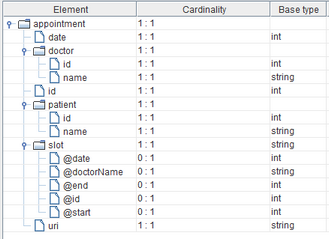

Creation Example

Topic content
We will need the Folder “Orchestra REST Tutorial” from soffico.
|
Hint: If you want to use the TCPMON you have to change the Port to the Port you set as localport in chapter 3.2.4 TCPMON on page . |
|
Hint: You can find all sample scenarios in the Orchestra REST Tutorial folder at ../Scenarios/REST Service. |
Preparation
To implement the AppointmentService Provider scenario we first have a look at the scenario shell for the REST-Server-Implementation.
|
Hint: Have a look at the handout folder .. Orchestra REST Tutorial\Scenarios\REST Service\00_AppointmentServiceProvider_Shell. |
You can see that there is a lot of content inside. There are some XML-Schemas for the representation of the Orchestra internal Message Types.
Message Types
•appointment

Figure – Orchestra REST Provider – Message Type appointment
•appointmentRequest
Figure – Orchestra REST Provider – Message Type appointmentRequest
•doctors
Figure – Orchestra REST Provider – Message Type doctors
•openSlotList
Figure – Orchestra REST Provider – Message Type openSlotList
•patients
Figure – Orchestra REST Provider – Message Type patients
•patientsRequest
Figure – Orchestra REST Provider – Message Type patientsRequest
REST Service Provider
The Scenario already contains the shell for the Rest Client with the right Resource Base path from the AppointmentService in the chapters before.
Figure – Orchestra REST Provider – REST Service Provider
...1 Message Mappings
The Scenario contains a procedural JAVA-Mapping foreach Message Type. These Mappings are for creating Orchestra-Messages of the JAVA AppointmentService Class-Objects.
|
Hint: It’s not necessary to understand the whole content of the mappings to do the REST Provider Implementation. If you want to know more about the internal JAVA-Code, have a look at the handout folder .. Orchestra REST Tutorial\ \Scenarios\_JavaSource. |
Figure – Orchestra REST Provider – Message Mappings
The arrows show how the message structure is built.
Listing all doctors in XML (Method GET)
In this chapter we will create a Orchestra REST Provider implementation to get a list of all doctors. According to chapter 3.3.1 Listing all doctors in XML (Method GET) we request the appointmentService by using the URL, but this time the appointmentService is implemented by Orchestra and for the Request we use the POSTMAN addon. Do following steps for the implementation.
http://localhost:8080/AppointmentMgr/appointments/doctors
1.Copy your shell scenario from chapter 5.4.1 Preparation.
2.Create a process model.
3.Add the mapping getDoctors to your process model.
4.Link all elements in your modell.
5.Configure the Output variable assignment of the Mapping.
Figure – Listing all doctors in XML – Process Modell
6.Open the Properties of your process model. Change the usage of the CURMSG at register Properties to OUTPUT.
Figure – Listing all doctors in XML – Process Modell Properties
7.Open the REST Service Provider REST_Provider_Appointment.
8.Add a resource to the root resource /AppointmentMgr/appointments.
9.Set to resource path /doctors.
Figure – Listing all doctors in XML – Resource /doctors
10.Insert a Method GET to the resource/doctors.
11.Remove the Request for the Method.
12.Set the Media type of the Response to application/xml, select the Message type doctors and set the Result code 200.
Figure – Listing all doctors in XML – Resource /doctors Response Configuration
13.Change technical mapping of the GET Method.
14.Select the process model you created at register Technical mapping.
15.Set the Variables at register Response mapping.
16.Use application/xml as ContentType, MSG get’s the CURMSG of the process model and HTTPStatusCode is 200 (200 = OK).
Figure – Listing all doctors in XML – Resource /doctors technical mapping of Method GET
17.Start your Test engine and select register Service registry at the Testengine-Panel. There you get the Endpoints for your REST Provider.

Figure – Listing all doctors in XML – Testengine Service registry.
18.Copy the link for the doctor resource to your Postman application, set the Method to GET and send the request. If every thing is fine you’ll get following response (See screenshot).
Figure – Postman Trace: Listing all doctors in XML
Figure – TCPMON Trace: Listing all doctors in XML
If you compare your TCPMon trace with the trace from chapter 3.3.1 Listing all doctors in XML (Method GET) you can see that Orchestra produces an identical trace up to application-specific header informations.
Request |
Response |
GET /AppointmentMgr/appointments/doctors HTTP/1.1 Host: localhost:8088 Connection: keep-alive Cache-Control: no-cache User-Agent: Mozilla/5.0 (Windows NT 6.1; WOW64) AppleWebKit/537.36 (KHTML, like Gecko) Chrome/50.0.2661.102 Safari/537.36 Postman-Token: 4a58e9e7-3ad3-d5ad-2c3d-119d7540813d Accept: */* Accept-Encoding: gzip, deflate, sdch Accept-Language: de-DE,de;q=0.8,en-US;q=0.6,en;q=0.4 |
HTTP/1.1 200 OK Content-Type: application/xml Transfer-Encoding: chunked Server: Jetty(6.1.12rc1)
<?xml version="1.0" encoding="UTF-8"?> <doctors> <doctor><id>1</id><name>rbauer</name></doctor> <doctor><id>2</id><name>House</name></doctor> <doctor><id>3</id><name>Watson</name></doctor> <doctor><id>4</id><name>Schiwago</name></doctor> </doctors> |